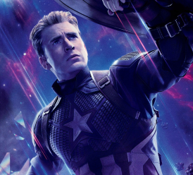

LES AVENGERS


Avec Captain America: Civil War, Tony Stark a fait de Spiderman un membre honoraire des Avengers. Un statut qui lui a ensuite été octroyé définitivement dans Avengers Infinity War et la menace Thanos. Mais durant ce laps de temps, Peter Parker s'est focalisé sur sa communauté en devenant "la petite araignée de quartier" Deux années d'expérience supplémentaires qui ont permis au jeune homme d'acquérir la maturité nécessaire pour devenir celui les Avengers attendaient.
Toutefois Spiderman combat des menaces principalement sur Terre car c'est son terrain de prédilection. Un nouveau groupe risque de voir le jour avec Dardevil, Luke Cage, Jessica Jones et Iron Fist : Les Defenders. On verra où tout cela nous mène !
